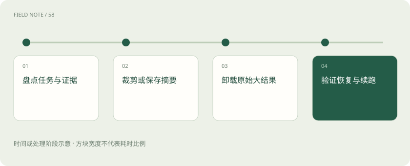
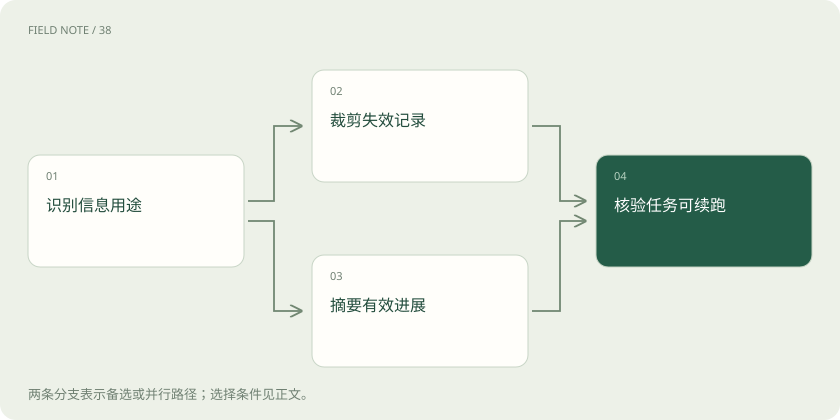

先读哪些知识
先用一个类比理解
类比只帮助建立直觉，不等同于技术的完整机制。
一图看懂

压缩不是追求最短
压缩的目标是在可用预算内保住完成任务所需信息，而不是把历史变成最短的一段话。需要先定义哪些内容不能丢：用户当前要求、禁止事项、已确认事实、未解决分歧以及外部动作状态。文本长度减少但这些要素失踪，系统只是获得了更便宜的错误输入。
教学中的事故调查持续数小时，早期用户要求只分析指定租户。如果摘要只保留“排查故障”，下一轮可能越过范围读取其他租户。压缩验收应以能否正确继续任务为标准，核对范围、时间窗和证据链，而不是仅展示节省了多少令牌。
裁剪适合明确失效的信息
裁剪直接移除不再需要的消息，例如重复搜索结果、已撤销方案和无关闲聊。它不要求生成新的事实陈述，因此不会产生摘要改写造成的同类失真；但仍可能错误判断某条旧信息已经无用。按时间机械删除最早消息，尤其容易抹掉任务发起时提出的限制与原始问题。
决定裁剪前，可以检查该记录是否仍被结论引用、是否包含唯一证据、是否影响授权。事故调查中重复的健康检查回执可合并，首次出现异常的时间点却可能是定位原因的重要线索。应按任务依赖判断价值，而不是简单把较旧等同于较不重要。
摘要需要保留认识状态
摘要应分别说明已证实事实、工作假设、尚待查询事项和已废弃解释。把“可能由于配置变更”压缩成“由于配置变更”，会把猜测升级为事实。摘要还应保留关键数字、单位、否定条件与异常样本，否则看起来通顺的交接材料可能悄悄改变了问题。
可以让接手者根据摘要复述下一步和依据，再与原始记录核对。若它无法指出哪个时间段缺少日志，说明摘要过于抽象。多次对摘要再摘要也会累积遗漏，因此重要结论应回到原始证据重新核验，而不是把上一版摘要当作最终事实来源。
图解：压缩方法的分路

工具输出卸载保留可读入口
大段日志、查询表格与网页全文可以保存在文件或产物系统中，模型本轮只接收结构概览、相关片段和读取入口。这是改变信息位置，不是销毁证据。入口应包含访问方式、对象标识、内容范围与版本，让后续步骤能定位需要的行或片段，而不是重新搜索全部世界。
例如把完整日志保存在受控产物中，摘要记录时间区间、错误类别和关键行位置。若后续问题涉及另一个时间窗，应按需读取相应片段。只有路径而没有权限、文件已被覆盖或链接失效，都意味着卸载后的证据不可恢复，不能继续声称结论可以审计。
调用与回执要保持结构完整
某些聊天接口要求工具调用与对应回执符合特定顺序和配对关系。压缩不能留下一个悬空的调用请求，也不能让回执失去所属调用。具体允许的消息结构依接口协议而定；设计时应把一组调用及其结果当成受约束单元，而不是随意删除其中任意一条。
对于尚未返回的请求，还要记录它究竟在等待、失败还是状态未知。事故查询超时后不能把摘要写成“没有错误”，因为没有收到结果不等于结果为空。压缩器必须保留这种不确定性，恢复时通过重新查询或检查服务状态解决，而不是用自然语言补全缺失事实。
子代理隔离减少主线负担
把独立调查交给子代理，可以让大量中间检索停留在其工作范围，主代理只接收结论、证据指针与未决事项。这种隔离减少主线输入，但没有消除信息选择责任：委托范围过窄可能漏掉交叉原因，返回摘要过短可能隐藏分歧，主代理也需要知道如何读取关键原始证据。
例如分别调查应用错误与数据库延迟，两个子代理都应收到相同时间窗和租户限制。汇总时若时间戳口径不同，需要先对齐再比较。这里是教学上的分工方案，并不保证并行一定更快；额外启动、协调和重复读取也会增加成本与等待时间。
版本和检查点支撑恢复
恢复材料应包含任务目标、当前进度、外部动作状态、摘要版本与原始证据版本。LangChain 文档区分线程内状态和跨线程记忆；持续任务的恢复通常先依赖线程状态，而不是从通用用户记忆中猜测进度。检查点保存了什么，应与实际恢复流程一起验证。
若日志产物在停机期间被替换，原有行号可能指向另一条记录。恢复时应检查内容标识或版本，发现变化就标注旧结论需要复核。对于已经请求的写入，先查询实际业务状态再续跑，避免压缩记录没有写清回执而造成重复提交。
图解：证据卸载流程
用交接演练检验压缩
可以在固定任务阶段生成压缩材料，让另一个执行实例仅依据这些材料继续，再检查它能否识别剩余任务、遵守限制和找到证据。演练要包含冲突证据、未完成调用和过期产物，才能发现压缩方案在哪些边界失效。原始记录应保留为对照，便于定位哪一步发生信息损失。
Anthropic 讨论压缩、结构化笔记与子代理作为长任务的管理办法；本文把它们转成事故交接练习，不代表所有任务应同时采用。若任务短且信息已经紧凑，额外摘要可能增加延迟并引入错误。是否压缩、何时压缩，应依据真实长度、任务阶段和恢复表现决定。
放在一起对比
| 方案 | 保留内容 | 适用边界 |
|---|---|---|
| 裁剪 | 剩余原始记录 | 适合明确失效内容 |
| 摘要 | 事实与进度提炼 | 需要检查遗漏和语义变化 |
| 卸载 | 摘要及原件入口 | 需要可靠读取和版本控制 |
放进真实场景
事故调查在交接前保存原始日志版本、租户范围、两条待证假设和查询状态，接手者按证据指针继续读取。
别踩这个误区
想一想
为什么保存一个文件路径还不算完成卸载？
还需要访问权限、稳定版本与定位信息，并验证后续确实能读回所需证据。
关联阅读
资料与边界
本文为原创知识讲解。类比和图示经过简化；示例数字不代表实测或报价。整理日期：2026-11-05。文末列出对应技术的原始资料，具体功能与版本支持请以原文为准。